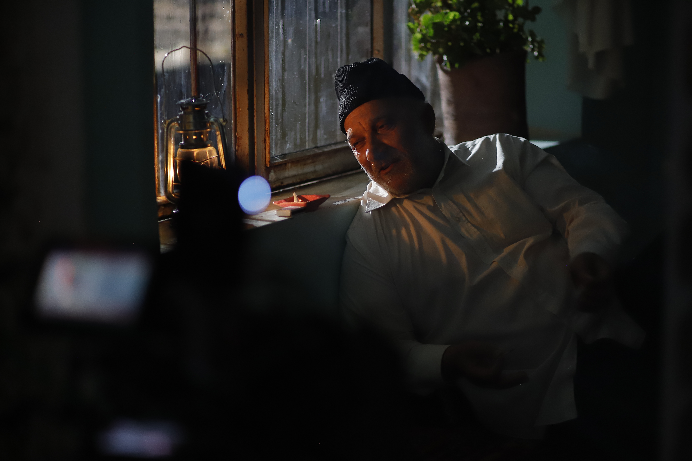
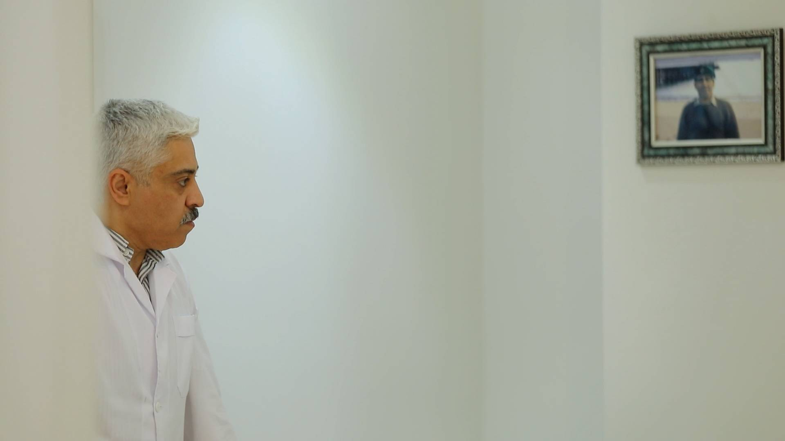
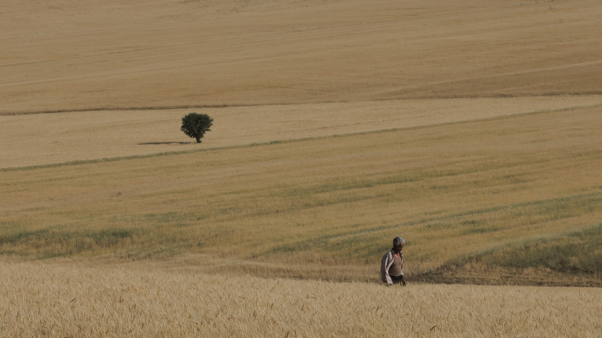
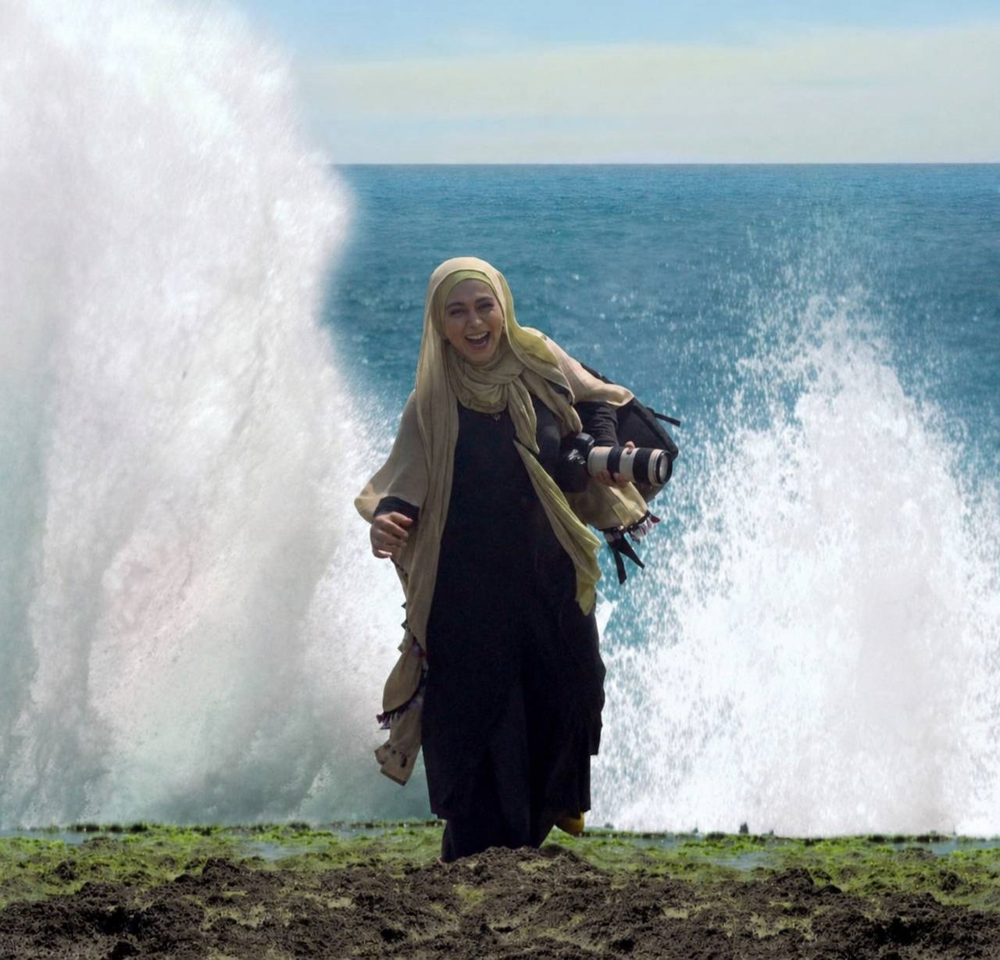

باران نمیگیرد
فیلم کوتاه داستانی
سال ساخت: ۱۴۰۴

سرود غمگین دولتو
فیلم مستند
سال ساخت: ۱۴۰۳

کوهستان بیصدا
فیلم مستند سینمایی
سال ساخت: ۱۴۰۱

پروازهای ناتمام
فیلم مستند سینمایی
سال ساخت: ۱۳۹۸

دایان
فیلم کوتاه داستانی
سال ساخت: ۱۳۹۶
تنگی نفس
فیلم مستند بلند
سال ساخت: ۱۳۹۴گروه کوچک ما
فیلم مستند
سال ساخت: ۱۳۹۰گاهی دلم برای خودم تنگ میشود
فیلم مستند
سال ساخت: ۱۳۸۹
درخت شب
فیلم کوتاه داستانی
سال ساخت: ۱۳۸۷

صندلی کنار پنجره
فیلم کوتاه داستانی
سال ساخت: ۱۳۸۶
این گهواره تکان خواهد خورد
فیلم کوتاه داستانی
سال ساخت: ۱۳۸۱هفت کوه مراد
فیلم مستند
سال ساخت: ۱۳۸۱رقص مهتاب
تلهفیلم
سال ساخت: ۱۳۸۰چیزی شبیه زندگی
فیلم کوتاه داستانی
سال ساخت: ۱۳۸۰قاب سبز
فیلم کوتاه داستانی
سال ساخت: ۱۳۷۹